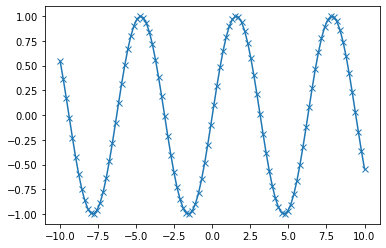
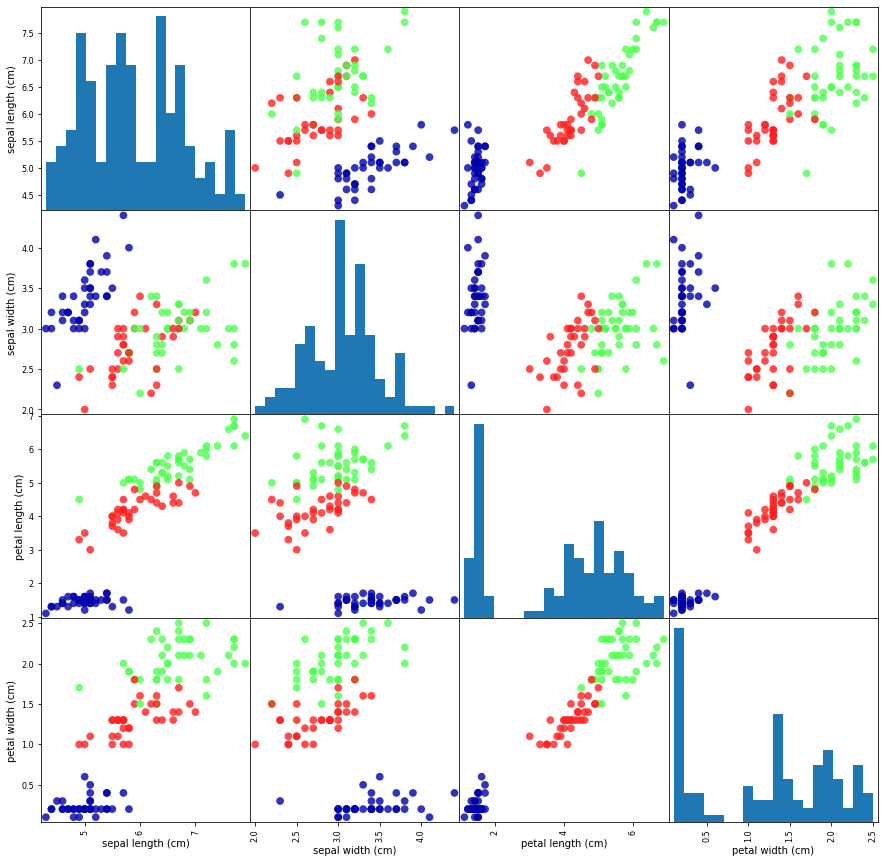

# 노트북이 코랩에서 실행 중인지 체크합니다.# import sys# if 'google.colab' in sys.modules:# # 사이킷런 최신 버전을 설치합니다.# !pip install -q --upgrade scikit-learn# # mglearn을 다운받고 압축을 풉니다.# !wget -q -O mglearn.tar.gz https://bit.ly/mglearn-tar-gz# !tar -xzf mglearn.tar.gz
Code
import sklearnfrom preamble import*
1.1.1 머신 러닝으로 풀 수 있는 문제
지도 학습 - 사용자는 알고리즘에 기대되는 입력과 기대되는 출력 제공 - 알고리즘은 주어진 입력에서 원하는 출력을 만드는 방법을 찾음 - 학습된 알고리즘은 사람의 도움 없이도 새로운 입력이 주어지면 적절한 출력을 만들 수 있음 - eg. 편지 봉투에 손으로 쓴 우편번호 숫자 판별 / 의료 영상 이미지에 기반한 종양 판단 / 의심되는 신용카드 거래 감지
비지도학습 - 알고리즘에 입력은 주어지지만 출력은 제공되지 않음 - eg. 블로그 글의 주제 구분 / 고객들을 취향이 비슷한 그룹으로 묶기 / 비정상적인 웹사이트 접근 탐지
1.1.2 문제와 데이터를 이해하기
Important
머신러닝 솔루션을 만들 동안 답하거나 마음에 새겨야 할 질문 - 어떤 질문에 대한 답을 원하는가? 가지고 있는 데이터가 원하는 답을 줄 수 있는가? - 내 질문을 머신러닝 문제로 가장 잘 기술할 수 있는 방법은 무엇인가? - 문제를 풀기에 충분한 데이터를 모았는가? - 내가 추출한 데이터의 특성은 무엇이며 좋은 예측을 만들어낼 수 있을 것인가? - 머신러닝 애플리케이션의 성과를 어떻게 측정할 수 있는가? - 머신러닝 솔루션이 다른 연구나 제품과 어떻게 협력할 수 있는가?
1.2 왜 파이썬인가?
주피터 노트북에 관하여
IPython 노트북에서 여러 언어를 포괄하는 프로젝트인 주피터 노트북으로 아름이 바뀌었고 IPython은 주피터 노트북의 파이썬 커널을 의미하게 되었습니다. Jupyter라는 이름은 줄리아(Julia), 파이썬(Python), R의 합성어이고 목성의 발음과 같아 과학자들과 천문학자들에 대한 경의가 담겨 있습니다. 주피터 노트북 로고의 가운데 큰 원은 목성을 의미하며 주위 3개의 작은 원은 1610년 목성의 위성 3개를 최초로 발견한 갈릴레오 갈릴레이를 기리는 의미입니다. https://jupyter.org/ (나, 역자의 성실함이란!!! 번역은 이렇게 해야 하는구나)
머신러닝과 데이터 분석은 데이터 주도 분석이라는 점에서 근본적으로 반복 작업입니다. 그래서 반복작업을 빠르게 처리하고 손쉽게 조작할 수 있는 도구가 필수입니다.
희소 행렬(sparse matrix)
0을 많이 포함한 2차원 배열을 저장할 때 사용됨
sparse matrix is a matrix, which is almost empty
storing all the zeros is wasteful -> store only nonzero items
think compression
pros: huge memory savings
cons: depends on actual storage scheme, (*) usually does not hold
import matplotlib.pyplot as plt# -10에서 10까지 100개의 간격으로 나뉘어진 배열을 생성합니다.x = np.linspace(-10, 10, 100)# 사인 함수를 사용하여 y 배열을 생성합니다.y = np.sin(x)# plot 함수는 한 배열의 값을 다른 배열에 대응해서 선 그래프를 그립니다.plt.plot(x, y, marker="x")plt.show() # 책에는 없음

1.6 이 책에서 사용하는 소프트웨어 버전
Code
import sysprint("Python 버전:", sys.version)import pandas as pdprint("pandas 버전:", pd.__version__)import matplotlibprint("matplotlib 버전:", matplotlib.__version__)import numpy as npprint("NumPy 버전:", np.__version__)import scipy as spprint("SciPy 버전:", sp.__version__)import IPythonprint("IPython 버전:", IPython.__version__)import sklearnprint("scikit-learn 버전:", sklearn.__version__)
.. _iris_dataset:
Iris plants dataset
--------------------
**Data Set Characteristics:**
:Number of Instances: 150 (50 in each of three classes)
:Number of Attributes: 4 numeric, pre
...
import mglearn as mglearn# X_train 데이터를 사용해서 데이터프레임을 만듭니다.# 열의 이름은 iris_dataset.feature_names에 있는 문자열을 사용합니다.iris_dataframe = pd.DataFrame(X_train, columns=iris_dataset.feature_names)# 데이터프레임을 사용해 y_train에 따라 색으로 구분된 산점도 행렬을 만듭니다.pd.plotting.scatter_matrix(iris_dataframe, c=y_train, figsize=(15, 15), marker='o', hist_kwds={'bins': 20}, s=60, alpha=.8, cmap=mglearn.cm3)plt.show() # 책에는 없음

1.7.4 첫 번째 머신 러닝 모델: k-최근접 이웃 알고리즘
scikit-learn의 모든 머신러닝 모델은 Estimator라는 파이썬 클래스로 각각 구현되어 있고, 이 모델 클래스들은 BaseEstimator 클래스를 상속받아 구현되어 있다.
fit 메서드는 knn 자체를 변경하여 knn 객체 자체를 반환한다. knn 객체가 문자열 형태로 출력된다. 주피터 노트북 코드 셀은 마지막 줄의 반환값을 출력한다.
Code
from sklearn.neighbors import KNeighborsClassifierknn = KNeighborsClassifier(n_neighbors=1)
Code
knn.fit(X_train, y_train)
KNeighborsClassifier(n_neighbors=1)
1.7.5 예측하기
Code
# 새 데이터 만들기X_new = np.array([[5, 2.9, 1, 0.2]])print("X_new.shape:", X_new.shape)